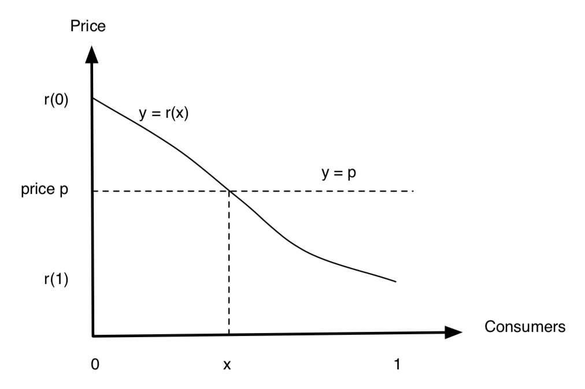

Here is a brief review of the theory of information cascade. There are two main ways that affect how an individual makes decisions:
- Information effect: only care about the process that influences individual decision-making
- Direct benefit effect or network effect: care both the process that influences individual decision-making and benefits after the decisions
The Economy without Network Effects
Consider a big market of a specific good, where there are numerous consumers and producers. Each one of them has a little ability to influence how the market works.
Let \(x\) be a fraction of the population, where \(x \in \mathbb{R}\) and \(x \in [0, 1]\). Suppose each consumer wants at most one unit of the good; each consumer has a personal intrinsic interest in obtaining the good that can vary from one consumer to another. Here we employ the idea of reservation price to quantify their intrinsic interests.
Reservation Price
We use \(r(x)\) to denote the reservation price of consumer \(x\) and we will assume that this function \(r(\cdot)\) is continuous. \(r(x)\) has the following assumptions:
- \(r(x)\) is strictly decreasing, which means there is no same price in terms of each consumer.
- \(r(x_i) > r(x_j),\; \forall i < j\).
- \(r(\cdot)^{-1}\) is called demand function.

Product Price and Cost
Now we shift our focus to the price of the product. Let \(p\) be the price of the product. Intuitively, consumer \(x\) would buy one if \(r(x) > p\). If \(p > r(0)\), there would not be any consumers buying the product; if \(p < r(1)\), all the consumers would buy the product. That is,
Let’s suppose that this good can be produced at a constant cost of \(p^*\) per unit. In aggregate, the producers will be willing to supply any amount of the good at a price of \(p^*\) per unit, and none of the good at any price below \(p^*\).